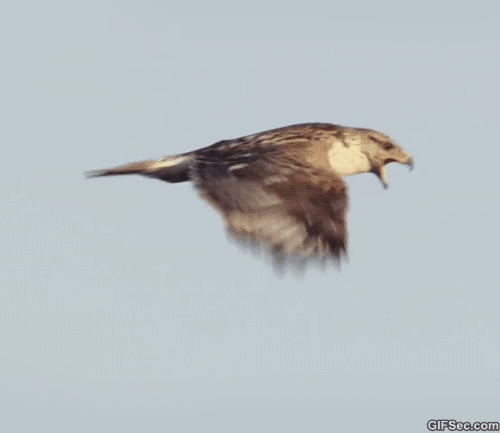

English
English
Russian
Community
Login
Register
Welcome to Snaplark! 🎉🎉
How to take a Screen Snap:
1. Press ‘Print Screen’ button for Screenshot OR 'G + Print Screen' for GIF Record.
2. Click and drag to crop the sample flying bird GIF
3. Click on any of the bunch of options available just for you!
4. Explore around and have fun!
Explore on
Snaplark tutorials
on the wide range of functionalities we offer.


 English
English Russian
Russian